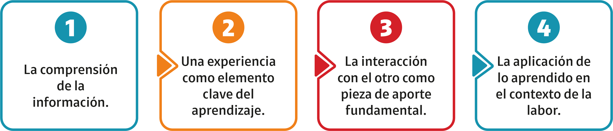

Para Universidad Claro, el desarrollo del talento humano es una prioridad. Por eso, convertimos la formación en un motor estratégico, con programas diseñados para fortalecer competencias técnicas, digitales, humanas y comerciales, alineados con los objetivos del negocio. Combinamos innovación, tecnología y experiencias significativas para asegurar que el conocimiento adquirido posea un impacto real en las labores diarias.

Como tal, este modelo busca potenciar el aprendizaje integral a través de los siguientes elementos:
Educación: hace referencia a la conceptualización y contenidos. Los objetivos de este componente son:
- Proporcionar conocimientos teóricos y conceptuales que sirvan como base para la comprensión.
- Favorecer la reflexión crítica y el desarrollo cognitivo.
- Garantizar que el aprendizaje esté alineado con objetivos.
Exposición: consiste en el trabajo colaborativo que implica el aprendizaje de otros y de otras perspectivas (mentoring, shadowing, OJT). Los objetivos de este componente son:
- Acercar al usuario a contextos reales o simulados donde pueda observar la aplicación práctica del conocimiento.
- Promover la curiosidad y la conexión entre teoría y práctica.
Experiencia: hace referencia a la práctica y aplicación de lo aprendido por medio de espacios simulados y aplicación directa. Los objetivos de este componente son:
- Fomentar el aprendizaje vivencial y la construcción de saberes a partir de la acción.
- Desarrollar competencias y habilidades transferibles al mundo real.